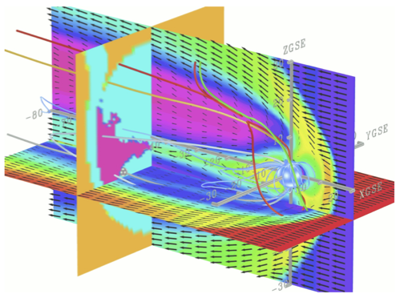

|
Jump to DART Documentation Main Index |
 |
This is the DART interface to the the Open Geospace General Circulation Model (OpenGGCM). A short synopsis of OpenGGCM is as follows:
Personnel involved with the OpenGGCM/DART project are:
J. Raeder,
K. Germaschewski,
D. Cramer,
L. Wang,
K. Maynard,
D. Arel,
J. Jensen (UNH),
T. Fuller-Rowell,
N. Muriyama (NOAA/SEC), (Rice U.),
M.-C. Fok,
H.-J. Connor (GSFC),
T. Matsuo (CU),
J. Anderson,
T. Hoar (NCAR)
OpenGGCM is not included in DART, it must be obtained from the
Community Coordinated Modeling Center.
DART is designed so that OpenGGCM runs as a completely separate executable.
The OpenGGCM/DART system runs differently than what is described in the
general DART documentation since OpenGGCM is intended to be run without
restarting. Consequently, multiple scripts are run concurrently: one to
run a collection of OpenGGCM instances, one to run DART, and one to
control the coordination between the two. Semaphore files control the
timing of the assimilation.
The composition of the DART state vector and which variables get updated in
OpenGGCM are under complete user control. Additional variables may be needed
to compute the expected value of the observation.
At present, only OpenGGCM variables that exist on the geographic grid are
supported, but design consideration has been given to additionally support
variables that exist on the magnetic grid.
The ability to find physical distances between observation locations and the
locations of the variables on multiple grids is fundamental to ensemble data
assimilation as it is generally necessary to restrict the impact of an
(arbitrarily-located) observation to the 'nearby' model variables.
It is required to associate the OpenGGCM variable name with a 'generic' DART
quantity (e.g., 'oplus' is
QTY_ELECTRON_DENSITY) in order to use the observation
operators already included with DART. A complete list of DART quantities for
geospace models and their observation support can be found in
obs_def_upper_atm_mod.f90 For information on how the observation
support is provided, please read the
Overview section of the DEFAULT_obs_def_mod.html.
Observations must be obtained from data providers and converted to a
DART observation sequence file. Observations from the
COSMIC Program already have a
converter program
(convert_cosmic_iono_cdf.f90) which is described in the
gps
documentation. The COSMIC observations of ELEC_dens
are converted and tagged as the DART-specific type
GPS_PROFILE which maps to the DART quantity
QTY_ELECTRON_DENSITY. This observation is the result of
a vertical weighting kernel (hence the 'profile') so it has a location
representative of the center of mass of the kernel. Consequently, the
forward observation operator provided by
obs_def_upper_atm_mod is a simple interpolation of
the model variable mapped to QTY_ELECTRON_DENSITY
to the observation location.
The COSMIC data can be downloaded from the
CDAAC Download Interface .
The convert_cosmic_iono_cdf program specifically
uses the ionPRF data type, so bundles of the data come in
TAR files with names like
cosmic2013_ionPrf_2013.213.tar . The individual files
have have names like:
ionPrf_C005.2013.213.01.52.G03_2013.3520_nc. More
information on converting the COSMIC data to a DART observation sequence
file can be found in the
gps documentation.
This namelist is read from the file input.nml. Namelists start with an ampersand '&' and terminate with a slash '/'. Character strings that contain a '/' must be enclosed in quotes to prevent them from prematurely terminating the namelist.
&model_nml openggcm_template = 'DATA.ionos2.nc' assimilation_period_days = 1 assimilation_period_seconds = 0 model_perturbation_amplitude = 0.2 debug = 0 model_state_variables = ' ' /
| Item | Type | Description | ||||||||
|---|---|---|---|---|---|---|---|---|---|---|
| openggcm_template | character(len=256) | Any OpenGGCM output file name that has the same model configuration as the ensemble. This is a readonly file, so it can be a simple link to ensemble member 1. This file is used to determine the geometry and the grid. | ||||||||
| assimilation_period_seconds | integer | This specifies the width of the assimilation window. The current model time is used as the center time of the assimilation window. All observations in the assimilation window are assimilated. BEWARE: if you put observations that occur before the beginning of the assimilation_period, DART will error out because it cannot move the model 'back in time' to process these observations. assimilation_period_seconds must be an integer number of OpenGGCM dynamical timesteps (as specified by OpenGGCM.nml:STEP) AND be able to be expressed by OpenGGCM.nml:STOP. Since STOP has three components: day-of-year, hour, and minute, the assimilation_period_seconds must be an integer number of minutes. | ||||||||
| model_perturbation_amplitude | real(r8) | When creating an ensemble of states from a single instance of OpenGGCM, it is necessary to call the routine pert_model_copies. model_perturbation_amplitude is used to scale the value of the variable and is used as the standard deviation of the gaussian noise added to the state for that variable and location. | ||||||||
| debug | integer | Set to 0 (zero) for minimal output. Successively larger values generate successively more output. | ||||||||
| variables | character(:,4) | Strings that identify
1) the OpenGGCM variables,
2) their DART quantity,
3) whether or not the variable should be written to the output file
after the assimilation, and
4) what kind of grid (magnetic or geographic) to use to describe
the variable.
The DART quantity must be one found in
assimilation_code/modules/observations/obs_kind_mod.f90
AFTER it gets built by preprocess.
Most of the upper atmosphere observation kinds are specified by
observations/forward_operators/obs_def_upper_atm_mod.f90,
so obs_def_upper_atm_mod.f90 must be specified
in the preprocess_nml:input_files
|
An example of a working namelist (not the default values) is:
&model_nml
openggcm_template = "DATA.ionos2.nc"
assimilation_period_days = 0
assimilation_period_seconds = 3600
model_perturbation_amplitude = 0.1
debug = 0
model_state_variables =
'oplus', 'QTY_ELECTRON_DENSITY', 'UPDATE', 'GEOGRAPHIC_GRID'
/
assimilation_code/location/threed_sphere/location_mod.f90 assimilation_code/location/utilities/default_location_mod.f90 assimilation_code/location/utilities/location_io_mod.f90 assimilation_code/modules/assimilation/adaptive_inflate_mod.f90 assimilation_code/modules/assimilation/assim_model_mod.f90 assimilation_code/modules/io/dart_time_io_mod.f90 assimilation_code/modules/io/direct_netcdf_mod.f90 assimilation_code/modules/io/io_filenames_mod.f90 assimilation_code/modules/io/state_structure_mod.f90 assimilation_code/modules/io/state_vector_io_mod.f90 assimilation_code/modules/observations/obs_kind_mod.f90 assimilation_code/modules/observations/obs_sequence_mod.f90 assimilation_code/modules/utilities/distributed_state_mod.f90 assimilation_code/modules/utilities/ensemble_manager_mod.f90 assimilation_code/modules/utilities/netcdf_utilities_mod.f90 assimilation_code/modules/utilities/[null_,]mpi_utilities_mod.f90 assimilation_code/modules/utilities/[null_,]win_mod.f90 assimilation_code/modules/utilities/random_seq_mod.f90 assimilation_code/modules/utilities/sort_mod.f90 assimilation_code/modules/utilities/time_manager_mod.f90 assimilation_code/modules/utilities/types_mod.f90 assimilation_code/modules/utilities/utilities_mod.f90 models/openggcm/cotr_mod.f90 models/utilities/default_model_mod.f90 assimilation_code/modules/utilities/ensemble_manager_mod.f90 observations/forward_operators/obs_def_mod.f90
A namelist interface &model_nml is defined by the module, and is read from file input.nml.
A note about documentation style. Optional arguments are enclosed in brackets [like this].
integer(i8) :: get_model_size
Returns the length of the model state vector. Required.
| model_size | The length of the model state vector. |
real(r8), dimension(:), intent(inout) :: x type(time_type), intent(in) :: time
Since OpenGGCM is not called as a subroutine, this is a NULL interface. OpenGGCM is advanced as a separate executable - i.e. async == 2. adv_1step only gets called if async == 0. The subroutine must still exist, but contains no code and will not be called. An error message is issued if an unsupported value of filter,perfect_model_obs:async is used.
integer, intent(in) :: index_in type(location_type), intent(out) :: location integer, optional, intent(out) :: var_type
Given an integer index into the state vector structure, returns the associated location. A second intent(out) optional argument returns the generic kind of this item, e.g. QTY_MOLEC_OXYGEN_MIXING_RATIO, QTY_ELECTRON_DENSITY, ... This interface is required to be functional for all applications.
| index_in | Index of state vector element about which information is requested. |
| location | The location of state variable element. |
| var_type | The generic quantity of the state variable element. |
type(ensemble_type), intent(in) :: state_handle real(r8), dimension(:), intent(in) :: x type(location_type), intent(in) :: location integer, intent(in) :: itype real(r8), intent(out) :: obs_val integer, intent(out) :: istatus
Given a handle containing information for a state vector, a state vector, a location, and a model state variable kind interpolates the state variable field to that location and returns the value in obs_val. The istatus variable should be returned as 0 unless there is some problem in computing the interpolation in which case a positive value should be returned. The itype variable is one of the quantity (QTY) parameters defined in obs_kind_mod.f90 and maps the quantity to a model variable for the interpolation.
| state_handle | The handle to the state structure containing information about the state vector about which information is requested. |
| x | A model state vector. |
| location | Location to which to interpolate. |
| itype | Quantity of state field to be interpolated. |
| obs_val | The interpolated value from the model. |
| istatus | Integer value returning 0 for success. Other values can be defined for various failures. |
type(time_type) :: shortest_time_between_assimilations
In the context of OpenGGCM, this function returns the assimilation window width. Any observation that is +/- half this time away from the model time is considered to be at the model time and the observation may be assimilated. Observations outside this window are ignored and may cause perfect_model_obs or filter to try to advance the model, which is not possible for OpenGGCM. This interface is required for all applications.
| var | The assimilation window width. |
Called to do one-time initialization of the model. There are no input arguments. static_init_model reads the DART namelists and reads the grid geometry and constructs the shape of the DART vector given the OpenGGCM variables specified in the DART namelist.
type(time_type), intent(out) :: time
This is a NULL INTERFACE for OpenGGCM. If input.nml:start_from_restart == .FALSE., this routine is called and will generate a fatal error.
real(r8), dimension(:), intent(out) :: x
This is a NULL INTERFACE for OpenGGCM. If input.nml:start_from_restart == .FALSE., this routine is called and will generate a fatal error.
integer, intent(in) :: ncid integer, intent(in) :: domain_id
This routine writes the model-specific attributes to netCDF files that DART creates. This includes the coordinate variables and any metadata, but NOT the model state.
| ncid | Integer file descriptor to previously-opened netCDF file. |
| domain_id | integer describing the domain (which can be a nesting level, a component model ...) Models with nested grids are decomposed into 'domains' in DART. The concept is extended to refer to 'coupled' models where one model component may be the atmosphere, another component may be the ocean, or land, or ionosphere ... these would be referenced as different domains. |
integer, intent(in) :: ncid integer, intent(in) :: domain_id type(ensemble_type), intent(in) :: state_ens_handle integer, optional, intent(in) :: memberindex integer, optional, intent(in) :: timeindex
This routine writes the DART state vector to a netCDF file.
| ncid | file descriptor to previously-opened netCDF file. |
| domain_id | integer describing the domain (which can be a nesting level, a component model ...) |
| state_ens_handle | The handle to the state structure containing information about the state vector about which information is requested. |
| memberindex | Integer index of ensemble member to be written. |
| timeindex | The timestep counter for the given state. |
type(ensemble_type), intent(inout) :: state_ens_handle integer, intent(in) :: ens_size real(r8), intent(in) :: pert_amp logical, intent(out) :: interf_provided
Given an ensemble handle, the ensemble size, and a perturbation amplitude;
perturb the ensemble. Used to generate initial conditions for spinning up
ensembles. If the model_mod does not want to do this,
instead allowing the default algorithms in filter
to take effect, interf_provided =&nbps;.false.
and the routine can be trivial. Otherwise, interf_provided
must be returned as .true.
pert_model_copies is intended to take a single model
state vector and perturbs it in some way to generate initial
conditions for spinning up ensembles.
| state_ens_handle | The handle containing an ensemble of state vectors to be perturbed. |
| ens_size | The number of ensemble members to perturb. |
| pert_amp | Not used by OpenGGCM. OpenGGCM uses the namelist variable model_perturbation_amplitude as a multiplier of the model value to be uses as the standard deviation of the gaussian noise that is added to the model state. |
| interf_provided | This is returned as .TRUE. since the routine exists. A value of .FALSE. would indicate that the default DART routine should just add noise to every element of state. |
type(get_close_type), intent(in) :: gc type(location_type), intent(inout) :: base_loc integer, intent(in) :: base_type type(location_type), intent(inout) :: locs(:) integer, intent(in) :: loc_qtys(:) integer, intent(in) :: loc_types(:) integer, intent(out) :: num_close integer, intent(out) :: close_ind(:) real(r8), optional, intent(out) :: dist(:) type(ensemble_type), optional, intent(out) :: ens_handle
This is a PASS-THROUGH routine, the actual routine is the default
one in location_mod.
Given a location and kind, compute the distances to all other locations
in the locs list. The return values are the number
of items which are within maxdist of the base, the index numbers in the
original locs list, and optionally the distances. The gc
contains precomputed information to speed the computations.
In general this is a PASS-THROUGH ROUTINE. It is listed on
the use line for the default_model_mod
which in turn passes it through to the
locations_mod, and in the public list for this module, but has no subroutine
declaration and no other code in this module:
use default_model_mod, only: get_close_obs public :: get_close_obs
More information on how this might be used for custom localization applications can be found in the documentation for the default_model_mod.
| gc | The get_close_type which stores precomputed information about the locations to speed up searching. |
| base_loc | Reference location. The distances will be computed between this location and every other location in locs. |
| base_type | The DART quantity at the base_loc; e.g. the integer specifying QTY_ELECTRON_DENSITY. |
| locs(:) | Compute the distance between the base_loc and each of the locations in this list. |
| loc_qtys(:) | The corresponding quantity of each item in the locs list. |
| loc_types(:) | The corresponding type of each item in the locs list. This is not available in the default implementation but may be used in custom implementations. |
| num_close | The number of items from the locs list which are within maxdist of the base location. |
| close_ind(:) | The list of index numbers from the locs list which are within maxdist of the base location. |
| dist(:) | If present, return the distance between each entry in the close_ind list and the base location. If not present, all items in the locs list which are closer than maxdist will be added to the list but the overhead of computing the exact distances will be skipped. |
| ens_handle | The handle to the ensemble structure containing information about the state vector about which information is requested. |
type(get_close_type), intent(in) :: gc type(location_type), intent(inout) :: base_loc integer, intent(in) :: base_type type(location_type), intent(inout) :: locs(:) integer, intent(in) :: loc_qtys(:) integer(i8), intent(in) :: loc_indx(:) integer, intent(out) :: num_close integer, intent(out) :: close_ind(:) real(r8), optional, intent(out) :: dist(:) type(ensemble_type), optional, intent(out) :: ens_handle
This is a PASS-THROUGH routine, the actual routine is the default
one in location_mod.
Given a location and kind, compute the distances to all other locations
in the locs list. The return values are the number
of items which are within maxdist of the base, the index numbers in the
original locs list, and optionally the distances. The gc
contains precomputed information to speed the computations.
In general this is a PASS-THROUGH ROUTINE. It is listed on
the use line for the default_model_mod
which in turn passes it through to the
locations_mod, and in the public list for this module, but has no subroutine
declaration and no other code in this module:
use default_model_mod, only: get_close_state public :: get_close_state
More information on how this might be used for custom localization applications can be found in the documentation for the default_model_mod.
| gc | The get_close_type which stores precomputed information about the locations to speed up searching. |
| base_loc | Reference location. The distances will be computed between this location and every other location in locs. |
| base_type | The DART quantity at the base_loc; e.g. the integer specifying QTY_ELECTRON_DENSITY. |
| locs(:) | Compute the distance between the base_loc and each of the locations in this list. |
| loc_qtys(:) | The corresponding quantity of each item in the locs list. |
| loc_indx(:) | The corresponding DART index of each item in the locs list. This is not available in the default implementation but may be used in custom implementations. |
| num_close | The number of items from the locs list which are within maxdist of the base location. |
| close_ind(:) | The list of index numbers from the locs list which are within maxdist of the base location. |
| dist(:) | If present, return the distance between each entry in the close_ind list and the base location. If not present, all items in the locs list which are closer than maxdist will be added to the list but the overhead of computing the exact distances will be skipped. |
| ens_handle | The handle to the enesmble structure containing information about the state vector about which information is requested. |
type(ensemble_type), intent(in) :: state_handle integer, intent(in) :: num type(location_type), intent(in) :: locs(:) integer, intent(in) :: loc_qtys(:) integer, intent(in) :: loc_types(:) integer, intent(in) :: which_vert integer, intent(out) :: status(:)
This is a PASS-THROUGH routine, the actual routine is the default
one in location_mod.
Converts the observations to the desired vertical localization coordinate system.
Most (real) models have observations in one or more coordinate systems
(pressure, height) and the model is generally represented in only one
coordinate system. To be able to interpolate the model state to the
observation location, or to compute the true distance between the state
and the observation, it is necessary to convert everything to one
coodinate system.
| state_handle | The handle to the state. |
| num | the number of observation locations |
| locs | the array of observation locations |
| loc_qtys | the array of observation quantities. |
| loc_types | the array of observation types. |
| which_vert | the desired vertical coordinate system. There is a table in the location_mod.f90 that relates integers to vertical coordinate systems. |
| status | Specifies the success or failure of the vertical conversion. If istatus = 0, the conversion was a sucess. Any other value is a failure. |
type(ensemble_type), intent(in) :: state_handle integer, intent(in) :: num type(location_type), intent(in) :: locs(:) integer, intent(in) :: loc_qtys(:) integer, intent(in) :: loc_types(:) integer, intent(in) :: which_vert integer, intent(out) :: status(:)
This is a PASS-THROUGH routine, the actual routine is the default
one in location_mod.
Converts the state to the desired vertical localization coordinate system.
Most (real) models have observations in one or more coordinate systems
(pressure, height) and the model is generally represented in only one
coordinate system. To be able to interpolate the model state to the
observation location, or to compute the true distance between the state
and the observation, it is necessary to convert everything to one
coodinate system.
| state_handle | The handle to the state. |
| num | the number of state locations |
| locs | the array of state locations |
| loc_qtys | the array of state quantities. |
| loc_types | the array of state types. |
| which_vert | the desired vertical coordinate system. There is a table in the location_mod.f90 that relates integers to vertical coordinate systems. |
| status | Specifies the success or failure of the vertical conversion. If istatus = 0, the conversion was a sucess. Any other value is a failure. |
character(len=*), intent(in) :: filename type(time_type) :: model_time
Reads the valid time of the model state in a netCDF file. There is a default routine in assimilation_code/modules/io/dart_time_io_mod.f90 that can be used as a pass-through. That routine will read the last timestep of a 'time' variable - which is the same strategy used for reading netCDF files that have multiple timesteps in them. If your model has some other representation of time (i.e. it does not use a netCDF variable named 'time') - you will have to write this routine.
| ncid | handle to an open netCDF file |
| dart_time | Specifies the (last) time of the model state. |
integer, intent(in) :: ncid type(time_type), intent(in) :: dart_time
Writes the assimilation time to a netCDF file. There is a default routine in assimilation_code/modules/io/dart_time_io_mod.f90 that can be used as a pass-through. If your model has some other representation of time (i.e. it does not use a netCDF variable named 'time') - you will have to write this routine.
| ncid | handle to an open netCDF file |
| dart_time | Specifies the time of the assimilation (the current time step). |
Does all required shutdown and clean-up needed.
Keep in mind that there are potentially lots of other files not explicitly mentioned here. Their creation and use is controlled by namelist settings. Inflation files, diagnostic files, etc.
| filename | purpose |
|---|---|
| input.nml | to read the model_mod namelist |
| DATA.ionos2.nc | read by the OpenGGCM model_mod |
| input_list.txt | file containing the list of OpenGGCM netCDF files to read. |
| output_list.txt | file containing the list of OpenGGCM netCDF files to write. |
| dart_log.out | the run-time diagnostic output |
| dart_log.nml | the record of all the namelists (and their values) actually USED |
| semaphore_file.txt | the semaphore file used to control the execution timeing between DART and the OpenGGCM model advances. |
None yet.
none at this time
N/A
DART software - Copyright UCAR. This open source software is provided by UCAR, "as is", without charge, subject to all terms of use at http://www.image.ucar.edu/DAReS/DART/DART_download
| Contact: | Tim Hoar |
| Revision: | $Revision$ |
| Source: | $URL$ |
| Change Date: | $Date$ |
| Change history: | try "svn log" or "svn diff" |